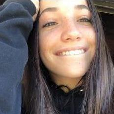

Curriculum Vitae de Brunella Rolandi
Descripcion personal:
- Edad: 18 años
- Genero: Femenino
- Fecha de nacimiento: 28 de noviembre de 2003
- Número de documento: 45406814
- Teléfono: 03518038090
- Mail: brunellarolandi@gmail.com
Educación:
- Escuela primaria completa: Instituto Educativo Nuevo Milenio.
Unquillo, Cordoba.
Marzo 2008- Diciembre 2014
- Escuela secundaria completa: Instituto Educativo Nuevo Milenio.
Especialización en comunicación y medios visuales.
Marzo 2015- Diciembre 2021
Experiencias Laborales: (Prácticas)
- Pasantía Periódico "El Milenio": Producción de notas periodísticas y entrevistas para el periódico por un mes. (2019)
- Pasantía Radio "El Milenio": Síntesis informativa diaria para la web. Edición y locución por un mes. (2020)
- Pasantía Diario Web "El Milenio": Producción de notas periodísticas y entrevistas para el diario web por un mes. (2021)
Skills:
- Atributos personales: Detallista- Comunicación- Empatía- Positividad- Manejo de tiempo
- Manejo de: word office- power point- excel- adobe photoshot- adobe ilustrator- adobe audition
- Idiomas: Ingles (Avanzado- Fluido)- Italiano (Intermedio)- Portugués (Básico)
Hobbies:
- Yoga
- Cerámica
- Artes Marciales
- Deportes Acuáticos
- Escalada
Yo estoy estudiando esta carrera porque me interesa mucho aprender sobre las nuevas tecnologías, además siempre supe que queria trabajar desde la comodidad de mi hogar haciendo algo que me guste. Mis expectativas al terminar la carrera es volverme independiente economicamente y disfrutar de un trabajo remoto, sin tener que establecerme en un lugar para siempre.
